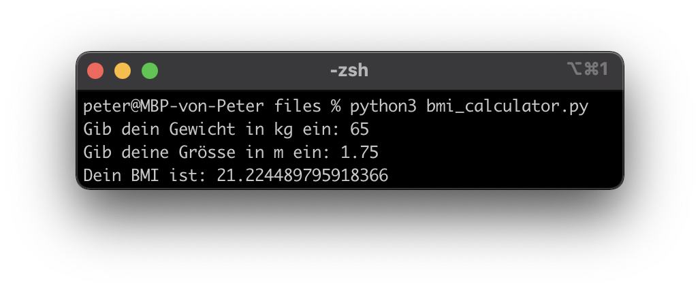

Dokumente
Hilfreiche Links
Wichtig: Verbringen sie nicht zu viel Zeit mit der Theorie. Stundenlang Videos schauen oder Texte lesen, wird sie nicht weiterbringen. Beim Programmieren geht es um das “Können” und nicht um das “Wissen”. Deshalb empfehle ich ihnen, selber zu experimentieren und viel zu üben (z. B. mit den Aufträgen oder eigenen Ideen/Projekten).
Auf Youtube finden sie (teilweise) gute Erklärvideos zum Thema Python. Hier sind einige Beispiellinks zu den Themen Variablen, Datentypen, Input Funktion und Type Casting.
Die Plattform W3Schools bietet sich als Nachschlagewerk an (in Englisch). Hier sind die Links zu den Themen Variablen, Datentypen und Type Casting.
Prüfungsvorbereitung
Nennen sie die vier wichtigsten Datentypen und geben sie je ein Beispiel dazu.
Was ist der Output von diesem Programm?
a = 6 b = 1.5 c = a + b + (a / b) print("Output: " + str(c))
Erstellen sie ein Programm, welches ihren BMI (Body-Mass-Index) berechnet. Der BMI ist denifiert als: BMI = Gewicht(kg)/Grösse(m)2 